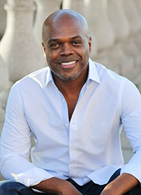

#1529 Die Entführung der U-Bahn Pelham 1 2 3
Alternativ: The Taking of Pelham 1 2 3


 IMDB-Wertung: 6.4 / 10
IMDB-Wertung: 6.4 / 10  Metascore: 55
Metascore: 55 
Nach einer Strafversetzung muss Walter Garber nun die U-Bahnen in New York koordinieren, nachdem er für die MTA bis vor kurzem noch in einer höheren Position beschäftigt war. Gegen 15 Uhr bemerkt er, dass die U-Bahn Pelham 123 mitten auf der Strecke stehen blieb. Kurze Zeit später meldet sich nicht der Zugführer Jerry Pollard über Funk, sondern der Gangster Ryder, der Pelham 123 zusammen mit seinen Männern überfiel und in seine Gewalt brachte. Nun stellt er Garber seine Forderungen: er hat 19 Geiseln und verlangt innerhalb einer Stunde 10 Millionen Dollar. Sollte er hingehalten werden, so wird er jede verspätete Minute eine der Geiseln töten. Ein Geiselnahme-Verhandlungsteam unter der Leitung Camonettis findet jedoch wenig Zuspruch bei Ryder. Er möchte in der Stunde, in der er auf sein Geld wartet, nur mit Garber kommunizieren.
Jahr: 2009
Dauer: 106 Minuten
FSK: 16
Land: USA Studio: Columbia PicturesTonspuren: DTS - ,
Untertitel: Deutsch,
Auflösung: 1080p (1920x800) Größe: 8181 MB
Genre: Action, Krimi, Thriller
Regisseur:  Tony Scott
Tony Scott
Drehbuch: Brian Helgeland, John Godey
Soundtrack: Harry Gregson-Williams
Darsteller:
 Denzel Washington als Walter Garber
Denzel Washington als Walter Garber John Travolta als Ryder
John Travolta als Ryder Luis Guzmán als Phil Ramos
Luis Guzmán als Phil Ramos- Victor Gojcaj als Bashkin
 John Turturro als Camonetti
John Turturro als Camonetti Michael Rispoli als John Johnson
Michael Rispoli als John Johnson Ramon Rodriguez als Delgado
Ramon Rodriguez als Delgado James Gandolfini als Mayor
James Gandolfini als Mayor John Benjamin Hickey als Deputy Mayor LaSalle
John Benjamin Hickey als Deputy Mayor LaSalle- Alex Kaluzhsky als George
 Gbenga Akinnagbe als Wallace
Gbenga Akinnagbe als Wallace Katherine Sigismund als Mom
Katherine Sigismund als Mom- Jake Siciliano als 8-Year-Old Boy
 Jason Butler Harner als Mr. Thomas
Jason Butler Harner als Mr. Thomas Gary Basaraba als Jerry Pollard, Motorman
Gary Basaraba als Jerry Pollard, Motorman Tonye Patano als Regina, Conductor
Tonye Patano als Regina, Conductor Aunjanue Ellis als Therese, Garber's Wife
Aunjanue Ellis als Therese, Garber's Wife Victor Cruz als Maintainer Three
Victor Cruz als Maintainer Three Saidah Arrika Ekulona als Dispatcher One
Saidah Arrika Ekulona als Dispatcher One- Jasmin Tavarez als Puerto Rican Girl
- Alice Kremelberg als George's Girlfriend
- Sean Meehan als Undercover Cop
- Todd Susman als Supervisor
- J. Bernard Calloway als Officer Moran / NYPD Liaison
- Zach Poole als LaSalle's Aide
- Reuben Jackson als Reporter at MTA
- Sean Nelson als ESU One
-  Ty Jones als Sniper
 Mike Houston als Money Car Driver
Mike Houston als Money Car Driver- René Ifrah als Money Car Shotgun
 Frank Wood als Police Commissioner Sterman
Frank Wood als Police Commissioner Sterman Brian Haley als Police Captain Hill, MTA
Brian Haley als Police Captain Hill, MTA- Maria Bartiromo als Financial Reporter
 John Lavelle als Team Member, NYPD
John Lavelle als Team Member, NYPD Chance Kelly als ESU Captain
Chance Kelly als ESU Captain Steve Routman als Heckler
Steve Routman als Heckler- Laurie Cole als Reporter at 42nd Street & Vanderbilt
 Nick Loren als Tunnel Commander
Nick Loren als Tunnel Commander Daniel Stewart Sherman als ESU Lieutenant Staley
Daniel Stewart Sherman als ESU Lieutenant Staley Adrian Martinez als Cabbie
Adrian Martinez als Cabbie Jordan Gelber als Commuter
Jordan Gelber als Commuter- Joe Forbrich als ESU Guy
- Jason Cerbone als ESU Guy
- Michael Mihm als ESU Desk Officer
 Michael Arthur als NYPD Cop , uncredited
Michael Arthur als NYPD Cop , uncredited- Daniel Bartkewicz als Commuter , uncredited
 Tommy Bayiokos als Garber's Hero Transit Cop , uncredited
Tommy Bayiokos als Garber's Hero Transit Cop , uncredited- Gregory Casimir als Gang Banger #3 , uncredited
 Bill Chemerka als Subway Passenger , uncredited
Bill Chemerka als Subway Passenger , uncredited- Justiin A. Davis als Lewis , uncredited
Datei: X:\2009(A-F)\Entführung der U-Bahn Pelham 1 2 3, Die (2009, FSK16, 1920x800).mkv seit 14.07.2015
Festplatte: HD 2008(G-Z)-2009(A-F)
 Es gibt insgesamt 91 Filme in der Gruppe '2009(A-F)'
Es gibt insgesamt 91 Filme in der Gruppe '2009(A-F)'